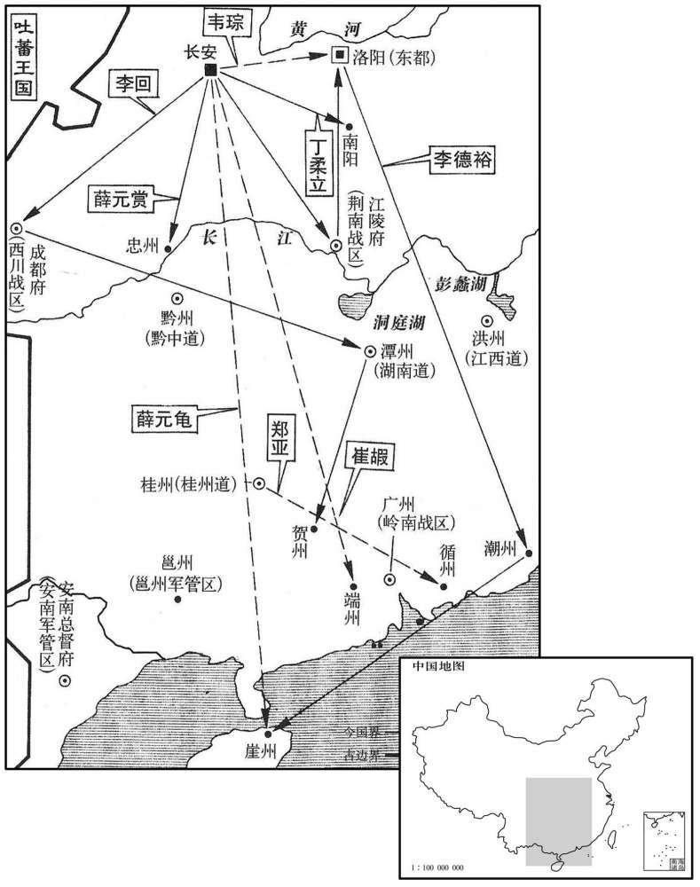

公元846年资治通鉴：本年记事、原文与白话对照
按原书编年位置阅读；追叙和史论不等于本年发生的事件。白话采用所据译本，缺译不以生成译文补齐。
卷248 · 本年记事
公元846年 · 唐武宗至道昭肃孝皇帝会昌六年
六年〔（丙寅、八四六）〕
上传原文的注释括号有异常，字符原样保留；无法可靠划分的段落默认全文显示。
本年事件索引（现代整理）
- 武宗任米暨为东北道招讨党项使
- 武宗久病，改洛阳的“洛”为“雒”，并改名李炎
- 武宗自正月十三日起未上朝，宰相求见也不获准
- 宪宗妃郑氏所生光王李怡被立为皇太叔并改名李忱
- 武宗驾崩，李忱即位为宣宗
- 宣宗尊生母郑氏为皇太后
- 宣宗任李德裕为荆南节度使，并贬黜薛元赏、薛元龟
- 宣宗杖杀道士赵归真等人，并恢复京城佛寺及僧尼管理制度
- 宣宗任白敏中为同平章事
- 宣宗立皇子李温等四人为郡王
- 礼仪使奏请恢复代宗神主入太庙并调整庙室，宣宗批准
- 淮南节度使李绅去世
- 乌介可汗被国相逸隐啜杀死，回鹘余部拥立其弟遏捻
- 武宗葬于端陵，庙号武宗
- 武宗宠妃王才人殉死，宣宗追赠其为贵妃
- 宣宗将牛僧孺、李宗闵等五名旧相由贬所迁往北方
- 李德裕罢平章事，改任东都留守
- 宣宗任卢商为中书侍郎、同平章事
- 册封黠戛斯可汗使者因国丧及朝臣反对而未能出发
- 南诏军入侵安南，裴元裕率邻道军队讨伐
- 宣宗任李景让为浙西观察使
- 李景让母亲郑氏拒绝私取墙中发现的钱财
- 李景让杖杀违命押牙引发军中不满，郑氏当众责打并训诫儿子
- 李景庄屡次科举落第，李景让拒绝为其请托，后来李景庄及第
- 礼院奏请在禘祭祝文中使用皇帝名讳，宣宗批准
- 宣宗接受衡山道士刘玄静传授三洞法箓
- 本月发生日食

本年形势与背景参考图
春，二月，庚辰，以夏州节度使米暨为东北道招讨党项使。〔米姓出于西域，康居枝庶分为米国。复入中国，子孙遂以为姓。
本段缺少可靠对应白话，原文完整保留；未使用生成译文。
上疾久未平，以为汉火德，改「洛」为「雒」；〔汉光武改洛阳为雒阳。〕唐土德，不可以王气胜君名，三月，下诏改名炎。〔王，于况翻。唐以土德王，而帝名瀍，瀍旁从水，土胜水，故言以王气胜君名。今改名炎，炎从火，火能生土，取以君名生王气也。帝未几而晏驾，厌胜果何益哉！〕
唐武宗患疾病很久未能痊愈，认为汉朝属火德，光武帝刘秀因而改洛阳的“洛”为“雒”；唐朝属土德，不可以王气胜过君主的名字，三月，唐武宗李颁下诏书，宣告改名为炎。炎从火，火能生土。
上自正月乙卯不视朝，〔考异曰：实录作「十五日」。按献替记：「自正月十三日后至三月二十日更不开延英，时见中诏处分，莫得预焉。」今从之。〕宰相请见，不许；〔见，贤遍翻。」中外忧惧。
唐武宗自从正月乙卯（十三日）以来就不再上朝视事，宰相请求见皇上，也不获允许；朝廷内外都深感忧惧。
初，宪宗纳李锜妾郑氏，生光王怡。怡幼时，宫中皆以为不慧，太和以后，益自韬匿，群居游处，〔处，昌吕翻。〕未尝发言。文宗幸十六宅宴集，好诱其言以为戏笑，〔【章：十二行本「笑」下有「号曰光叔」四字；乙十一行本同；孔本同；张校同；退斋校同。好，呼到翻。〕上性豪迈，尤所不礼。〔考异曰：韦昭度续皇王宝运录曰：「宣宗即宪皇第四子。自宪皇崩，便合绍位，乃与侄文宗。文宗崩，武皇卢有怹谋，乃密令中常侍四人擒宣宗于永巷，幽之数日，沉于宫厕。宦者仇公武悠之，乃奏武宗曰：『前者王子，不宜久于宫厕。诛之。』武宗曰：『唯唯。』仇公武取出，于车中以粪土杂物覆之，将别路归家，密养之。三年后，武皇宫车晏驾，百官奉迎于玉宸殿立之。寻擢仇公武为军容使。」尉迟偓中朝故事曰：「敬宗、文宗、武宗相次即位，宣皇皆叔父也。武宗初登极，深忌焉。一日，会鞠于禁苑间，武宗召上，遥瞬目于中官仇士良。士良跃马向前曰：『适有旨，王可下马！』士良命中官舆出，军中奏云：『落马，已不救矣！』寻请为僧，游行江表间。会昌末，中人请还京，遂即位。令狐澄贞陵遗事曰：「上在藩时，尝从驾回，而上误堕马，人不之觉。比二更，方能兴。时天大雪，四顾悄无人声。上寒甚，会巡警者至，大惊。上曰：『我光王也。不悟至此，方困且渴，若为我求水！』警者即于旁近得水以进，遂步归藩邸。」此三事皆鄙妄无稽，今不取。〕及上疾笃，旬日不能言。诸宦官密于禁中定策，辛酉，下诏称：「皇子冲幼，须选贤德，光王怡可立为皇太叔，〔考异曰：旧纪：「三月一日，立为皇太叔。」武宗实录云「壬戌」。宣宗实录云「辛酉」。按献替记云，「自正月十三日后至三月二十日更不开延英」，盖二十一日则宣宗见百寮也。今从宣宗实录。〕更名忱，〔更，工衡翻。忱，时壬翻。〕应军国政事令权句当。」〔以武宗之英达，李德裕之得君，而不能定后嗣，卒制命于宦竖，北司掌兵，且专宫禁之权也。句，古候翻。当，丁浪翻；下咸当同。〕太叔见百官，哀戚满容；裁决庶务，咸当于理，人始知有隐德焉。〔当，丁浪翻。〕
起初，唐宪宗收纳李的妾郑氏，生光王李怡。李怡年幼时，后宫中人们都认为他不聪明，唐文宗太和年以后，李怡更是自己韬光养晦，在大庭广众游乐相处时，从不发言。唐文宗到十六宅为诸王设宴集会，喜欢引逗李怡发言以作笑料，唐武宗性格强韧豪迈，对光王李怡更加无礼。唐武宗危病，十来天不能说话，诸宦官于是暗中在宫禁内策划立新皇帝，辛酉（二十日），禁中传出以唐武宗名义颁发的诏书称：“皇子们都太年幼，必须选择贤德的皇族成员继承皇位，光王李怡可以立为皇太叔，改其名称李忱，所有军国政事可让他暂时处置。”皇太叔李忱出宫见百官时，满脸悲哀戚惨的样子；而裁决细小军政事务时，都能合情合理，人们这才知道他很内秀。
甲子，上崩。〔年三十三。〕以李德裕摄冢宰。丁卯，宣宗即位。宣宗素恶李德裕之专，〔恶，乌路翻。〕即位之日，德裕奉册；既罢，谓左右曰：「适近我者非太尉邪﹖每顾我，使我毛发洒浙。」〔近，其靳翻。洒浙，肃然之意，言可畏惮也。〕夏，四月，辛未朔，上始听政。
甲子（二十三日），唐武宗驾崩。李德裕受命兼任冢宰办理后事。丁卯（二十六日），唐宣宗李忱即皇帝位。唐宣宗李忱平素厌恶李德裕专权，即皇帝位的那一天，由李德裕手捧册封的诏书；册立仪式既罢，宣宗对左右近侍说：“刚才靠近我的是不是李太尉呢？每看我一眼，都使人毛骨耸然。”夏季，四月，辛未朔（初一），唐宣宗开始上朝听政。
尊母郑氏为皇太后。
唐宣宗尊自己的生母郑氏为皇太后。
壬申，以门下侍郎、同平章政事〔【章：十二行本无「政」字；乙十一行本同。】〕李德裕同平章事，充荆南节度使。〔考异曰：实录、新表、传皆云：「德裕自守太尉检校司徒为荆南节度使。」按制辞皆无责降之语，岂可遽自守太尉检校司徒！今从旧纪。又贞陵遗事曰：「上初即位于太极殿，时宰相李德裕与行册礼。及退，上谓宦侍云云。听政之二日，遂出为荆门。」旧德裕传曰：「五年，武宗上徽号，累表乞骸，不许。德裕病月余，坚请解机务，乃以本官平章事兼江陵尹、荆南节度使。数月，追复知政事。宣宗即位，罢相，出为东都留守。」按旧纪、新表及诸书，武宗朝德裕未尝罢免。此年九月，方自江陵除东都留守。旧传谬误，今从实录。〕德裕秉权日久，位重有功，众不谓其遽罢，闻之莫不惊骇。甲戌，贬工部尚书、判盐铁转运使薛元赏为忠州刺史，弟京兆少尹、权知府事元龟为崖州司户，皆德裕之党也。
壬申（初二），唐宣宗下令调门下侍郎、同平章政事李德裕仍带平章事衔，出任荆南节度使。李德裕在朝掌握权柄很久，位望崇重，立有大功，众朝官想不到他突然被罢免，消息传来，百官无不感到惊骇。甲戌（初四），唐宣宗又下令贬工部尚书、判盐铁转运使薛元赏为忠州刺史，他的弟弟京兆少尹、权知府事薛元龟贬为崖州司户，因为他们都是李德裕的党羽。
杖杀道士赵归真等数人，流罗浮山人轩辕集于岭南。五月，乙巳，赦天下。上京两街先听留两寺外，更各增置八寺；〔左街先留慈恩、荐福，今增置兴唐、保寿二寺。宝应寺改为资圣寺，青龙寺改为护国寺，菩提寺改为保唐寺，清禅寺改为安国寺。尼寺二所，法云寺改为唐安寺，崇敬寺改为唐昌寺。右街先留西明寺，改为福寿寺，庄严寺改为圣寿寺。添置僧寺一所，千福寺，尼寺一所，兴圣寺依旧名。化度寺改为崇福寺，永泰寺改为万寿寺，清国寺改为崇圣寺，经行寺改为龙兴寺，奉恩寺改为兴福寺。尼寺一所，万善寺改为延唐寺。考异曰：杭州南亨记曰：「今天子即位，天下州率兴二寺，用齿衰男女为其徒，各止三十人，两京数倍其四五焉。」实录：「准五日敕，两街先留寺两所外，更添置八所。」注：唐石刻云，「京师两街各置十寺，寺僧五十人。」盖谓二年正月赦后，非今赦也。〕僧、尼依前隶功德使，不隶主客，〔唐初，天下僧、尼、道士、女官皆隶鸿胪寺。武后延载元年，以僧、尼隶祠部。开元二十四年，道士、女官隶宗正寺。天宝二载，以道士隶司封。贞元四年，崇玄馆罢大学士后，复置左、右街大功德使、东都功德使、修功德使，总僧、尼之籍及功役。元和二年，以道士、女官隶左、右街功德使。会昌二年，以僧、尼隶主客。太清宫置玄元馆，亦有学士，至六年废，而僧、尼复隶两街功德使，即是年也。〕所度僧、尼仍令祠部给牒。〔改武宗之政也。牒，即今祠部所僧、道度牒也。〕
唐宣宗下令用棍棒打杀道士赵归真等数人，将罗浮山人轩辕集流放到岭南。五月，乙巳（初五），宣告大赦天下。又宣告上京长安两街除以前留下的两座佛教寺庙外，再各增置八座寺庙；佛教僧侣、尼姑依照以前的规定隶属于左、右街功德使，不隶属于尚书省礼部主客郎中，这些寺庙所度的僧侣、尼姑都可由祠部发给度牒，准许他们出家。
以翰林学士、兵部侍郎白敏中同平章事。
唐宣宗任命翰林学士、兵部侍郎白敏中为同平章事。
辛酉，立皇子温为郓王，渼为雍王，〔渼，音美。〕泾为雅王，滋为夔王，沂为庆王。
辛酉（二十一日），唐宣宗立皇子李温为郓王，李为雍王，李泾为雅王，李滋为夔王，李沂为庆王。
六月，礼仪使奏「请复代宗神主于太庙，〔开成五年，文宗升祔，代宗神主以亲尽祧迁，今请复之。〕以敬宗、文宗、武宗同为一代，于庙东增置两室，为九代十一室。」从之。
六月，礼仪使向唐宣宗上奏称：“请陛下恢复唐代宗的神主像于太庙，由于唐敬宗、唐文宗、唐武宗为同一代，都是唐穆宗的儿子，所以可于太庙之东增置两个室，共为九代十一室神主像。”唐宣宗表示同意。
秋，七月，壬寅，淮南节度使李绅薨。
秋季，七月，壬寅（初三），淮南节度使李绅去世。
回鹘乌介可汗之众稍稍降散及冻馁死，所余不及三千人；国相逸隐啜杀乌介于金山，〔乌介可汗自杀胡山之败，窜于黑车子族，今为其下所杀。〕立其弟特勒遏捻为可汗。〔捻，奴协翻。〕
回鹘国乌介可汗的部众渐渐减少，有的降唐，有的离散，有的冻饿而死，所余下的已不及三千人。回鹘宰国相逸隐啜在金山将乌介可汗杀死，立乌介可汗的弟弟特勒遏捻为可汗。
八月，壬申，葬至道昭肃孝皇帝于端陵，〔端陵，在京兆三原县东十里。〕庙号武宗。
八月，壬申（初三），唐宣宗及朝臣将至道昭肃孝皇帝李炎葬于端陵，庙号为武宗。
初，武宗疾困，顾王才人曰：「我死，汝当如何﹖」对曰：「愿从陛下于九泉！」武宗以巾授之。武宗崩，才人即缢。〔武宗之问，王才人之死，惩杨妃之祸也。〕上闻而矜之，赠贵妃，葬于端陵柏城之内。〔考异曰：蔡京王贵妃传曰：「帝疾亟，才人久视帝而归燕息处，浓妆絜服如常日，乃取所翫用物散与内家净尽；持帝所授巾至帝前，已见升遐，容易自缢，而仆于御座下，以缢为名而得卒。」旧纪：「武宗葬端陵，德妃王氏祔焉。」李德裕献替记：「自上临御，王妃有专房之宠。至是，以娇勡忤旨，一夕而殒，群情无不惊惧，以谓上功成之后喜怒不测。德裕因以进谏。」在五年十月，与王贵妃传不同，恐献替记误。康軿刻谈录曰：「孟才人善歌，有宠于武宗。属一旦圣体不豫，召而问之曰：『我或不讳，汝将何之﹖』对曰：『若陛下万岁之后，无复生为！』是日令于御前歌河满子一曲，声调凄咽，闻者涕零。及宫车晏驾，哀恸数日而殒，窆于端陵之侧。」此事恐正是王才人，传闻不同。〕
起初，唐武宗被疾病困扰，望着宠妃王才人说：“我死了，你该怎么办呢？”王才人回答说：“我愿意随从您一起到九泉之下！”唐武宗即送给她一条绫巾。待唐武宗驾崩，王才人即用绫巾上吊自缢而死。唐宣宗听说后对王才人深感怜悯，赠给她贵妃的名号，安葬于端陵柏城之内。
以循州司马牛僧孺为衡州长史，封州流人李宗闵为郴州司马，恩州司马崔珙为安州长史，〔安州，汉安陆县地，京师东南二千五十一里。〕潮州刺史杨嗣复为江州刺史，昭州刺史李臸为郴州刺史。僧孺等五相皆武宗所贬逐，〔杨嗣复贬见二百四十六卷元年。三年，崔琵罢相，崔钺代之，奏珙妄费宋滑院盐铁钱九十万缗，又劾与刘从谏厚，数护其奸，贬澧州刺史，再斥恩州司马。僧孺、宗闵贬见上四年。〕至是，同日北迁。宗闵未离封州而卒。〔离，力智翻。〕
唐宣宗任命循州司马牛僧孺为衡州长史，任命流放封州的李宗闵为
郴州司马，任命恩州司马崔珙为安州长史，任命潮州刺史杨嗣复为江州刺史，
任命昭州刺史李珏为郴州刺史。牛僧孺等五位前宰相都是唐武宗所贬逐的，到
这时，五人同日北还。李宗闵还未离开封州就死了。
九月，以荆南节度使李德裕为东都留守，解平章事；以中书侍郎、同平章事郑肃同平章事、充荆南节度使。
九月，唐宣宗任荆南节度使李德裕为东都留守，解除他平章事的官衔；加中书侍郎、同平章事郑肃同平章事衔，充任荆南节度使。
以兵部侍郎、判度支卢商为中书侍郎、同平章事。商，翰之族孙也。〔卢翰相德宗于兴元、贞元之间。〕
唐宣宗任命兵部侍郎、判度支卢商为中书侍郎、同平章事。卢商是卢翰的族孙。
册黠戛斯可汗使者以国丧未行，或以为僻远小国，不足与之抗衡；回鹘未平，不应遽有建置。诏百官集议，事遂寝。
唐武宗派出册封黠戛斯可汗的使者李拭等，因为国丧而未前行，有人认为黠戛斯是僻远小国，不足以与大国抗衡；回鹘王国的侵扰并未平定，不应该马上有所建置。唐宣宗于是下诏请百官来集体议论，册封黠戛斯可汗的事也就放下来了。
蛮寇安南，经略使裴元裕帅邻道兵讨之。〔帅，读曰率。〕
蛮族南诏入侵安南，唐安南经略使裴元裕率领相邻几道的军队攻讨蛮族。
以右常侍李景让为浙西观察使。〔右常侍，右散骑常侍也。〕
唐宣宗任命右散骑常侍李景让为浙西观察使。
初，景让母郑氏，性严明，早寡，家贫，居于东都。诸子皆幼，母自教之。宅后古墙因雨隤陷，〔隤，杜回翻，下坠也。〕得钱盈船，奴婢喜，走告母；母往，焚香祝之曰：「吾闻无劳而获，身之灾也。天必以先君余庆，矜其贫而赐之，则愿诸孤他日学问有成，乃其志也，此不敢取！」遽命掩而筑之。三子景让、景温、景庄，皆举进士及第。景让官达，发已斑白，小有过，不免捶楚。〔捶，止橤翻。〕
起初，李景让的母亲郑氏，性格严明，很早就守寡，家境贫困，居住在东都洛阳。几个儿子的年纪都很小，由郑氏亲自教育。李景让家住宅后面的古旧墙壁因为下雨而陷塌，得到的钱能装满一船，奴婢们欢喜，跑来告诉李景让的母亲；李母赶来，烧香祷告，说：“我听说没有劳动而获利，是自身的灾祸。老天必定是因为我死去的丈夫积下了功德，怜悯我家贫困而赐给我们钱财，但愿几个孤儿将来学问有成，这才是我丈夫的志向，这些份外之钱我不敢取！”于是即命人将钱掩埋于原处，并重新修筑好墙壁。郑氏的三个儿子李景让、李景温、李景庄，都中进士及第，李景让已当上大官，头发都已斑白，在家小有过错，仍不免遭母亲的捶打。
景让在浙西，有左都押牙迕景让意，〔迕，五故翻。〕景让杖之而毙。军中愤怒，将为变。母闻之，景让方视事，母出坐听事，〔听，读曰厅。〕立景让于庭而责之曰：「天子付汝以方面，国家刑法，岂得以为汝喜怒之资，妄杀无罪之人乎！万一致一方不宁，岂惟上负朝廷，使垂年之母衔羞入地，〔垂，末垂也；垂年，犹言末垂之年。〕何以见汝之先人乎！」命左右褫其衣坐之，〔褫，丑豸翻。〕将挞其背。将佐皆为之请，〔为，于伪翻。〕拜且泣，久乃释之，军中由是遂安。
李景让在浙西做官，部下左都押牙违背他的意旨，李景让竟举杖将左都押牙打死。引起军中愤怒，眼看就将发生变乱。景让母郑氏得知消息，时李景让正在官厅办理公事，郑氏出来坐于厅堂，然后让李景让站在庭院中，愤怒地责备说：“天子付给你镇守一方的重任，国家的刑法，岂能成为你个人喜怒的凭借，由你随意杀无罪的人！万一造成一方不安宁，岂只是上负于朝廷，就是垂老之年的我也要含羞而死，有什么脸面见你的先人前辈！”说完命令左右家人剥下李景让的衣服，坐于庭中，将鞭挞李景让的背。将佐们都为李景让求情，拜谢以致于哭泣，郑氏很久才将李景让释放，军中于是安定下来了。
景庄者于场，〔唐人谓贡院为场屋，至今犹然。〕每被黜，母辄挞景让。然景让终不肯属主司，〔属，之欲翻。主司，校文主司也，礼部侍郎知贡举者是也。〕曰：「朝廷取士自有公道，岂敢效人求关节乎！」久之，宰相谓主司曰：「李景庄今岁不可不收，可怜彼翁每岁受挞！」由是始及第。
李景庄多年入贡院参加科举考试，每次考不上被黜退时，母郑氏就要鞭挞李景让。然而李景让始终不肯依附于主考官，说：“朝廷科举取士自会有公道的，岂敢象别人那样去打通关节呢！”过了很久，宰相对知贡举的主司说：“李景庄今年科举不能不予录取，可怜他的哥哥每年都要受鞭挞！”于是李景庄始得以进士及第。
冬，十月，礼院奏禘祭祝文于穆、敬、文、武四室，但称「嗣皇帝臣芋昭告」，从之。〔太常有礼院。帝于穆宗，弟也；于敬、文武，叔也。〕
冬季，十月，礼院向唐宣宗奏称，在祭的祝文上，对于唐穆宗及其儿子唐敬宗、唐文宗、唐武宗四室，因唐宣宗辈份并不比他们低，所以祝文上只是自称“嗣皇帝臣某昭告”，唐宣宗表示同意。
甲申，上受三洞法箓于衡山道士刘玄静。〔既杖杀赵归真而复受法箓，所谓尤而效之。会昌五年刘玄静还衡山。〕
甲申，（十六日），唐宣宗接受道教三洞法于衡山道士刘玄静。
十二月，戊辰朔，日有食之。
十二月，戊辰朔（初一）出现日食。
译本中未与胡注本可靠对应的内容
以下另列供核对版本差异，不并入胡注本正文。
译本所附古文
[1]春，二月，庚辰，以夏州节度使米暨为东北道招讨党项使。
译本白话
春季，二月，庚辰（九日），唐武宗任命夏州节度使米暨为东北道招讨党项使。
原书衔接
宣宗元圣至明成武献文睿智章仁神聪懿道大孝皇帝上〔讳怡，即位改名忱，宪宗第十二子。按通鉴书唐诸帝号，自玄宗以后，皆以葬陵谥册为正。宣宗谥圣武献文孝皇帝，若元圣至明成武献文睿智章仁神聪懿道大孝，则咸通十三年追崇之号也。〕